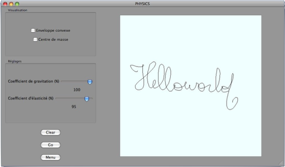

Dessin à main levée

Cette section vous permet de créer vos propres figures, et de les voir évoluer sous un champ de gravitation configurable : pour les mettre en mouvement, il suffit de cliquer sur “Go” ou bien d’attraper la figure par son centre de masse et de la lancer à travers la fenêtre (en veillant à ce que la boule enveloppant le polygone ne heurte pas les bords).
Les options accessibles via la fenêtre sont :


-pas de pesanteur- à 100% -intensité maximale-)

de pourcentage, relatif aux chocs contre les parois de la fenêtre d’affichage


“Menu” : Pour se rendre au menu principal
Il est également possible via le menu affichage de :


